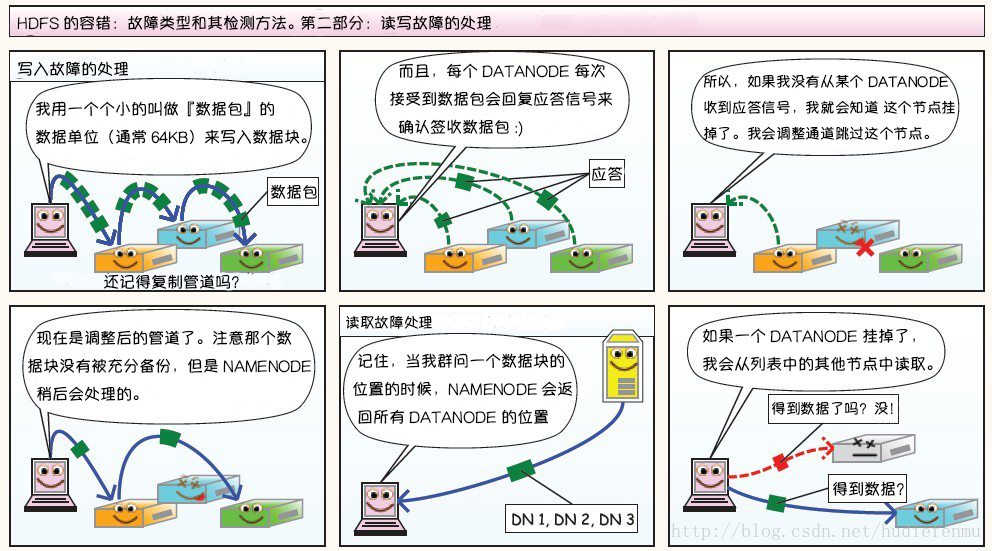

BigData-Notes
[toc]
前言
块存储、文件存储、对象存储这三者的本质区别
这三者的本质差别是使用数据的"用户"不同：块存储的用户是可以读写块设备的软件系统，例如传统的文件系统、数据库；文件存储的用户是自然人；对象存储的用户则是其它计算机软件
1 大数据处理流程
1.1处理流程

中大型项目通常采用微服务架构进行分布式部署，采集过程不能影响正常业务的开展。多种日志收集工具：Flume， Logstash， Kibana，都能通过简单的配置完成复杂的数据收集和数据聚合
1.2 数据存储
结构化数据（表）、半结构化数据（日志数据、视频、音频），为了解决海量半结构化和非结构化数据的存储，衍生了Hadoop HDFS，KFS，GFS等分布式文件系统，它们能支持结构化、半结构和非结构化数据的存储，并可以通过增加机器进行横向扩展
分布式文件系统完美地解决了海量数据存储的问题，但是一个优秀的数据存储系统需要同时考虑数据存储和访问两方面的问题，比如你希望能够对数据进行随机访问，这是传统的关系型数据库所擅长的，但却不是分布式文件系统所擅长的，那么有没有一种存储方案能够同时兼具分布式文件系统和关系型数据库的优点，基于这种需求，就产生了 HBase、MongoDB。
1.3 数据分析
数据分析：批处理和流处理
- 批处理：对一段时间内海量的离线数据进行统一的处理，对应的处理框架有 Hadoop MapReduce、Spark、Flink 等；
- 流处理：对运动中的数据进行处理，即在接收数据的同时就对其进行处理，对应的处理框架有 Storm、Spark Streaming、Flink Streaming 等。
批处理和流处理各有其适用的场景，时间不敏感或者硬件资源有限，可以采用批处理；时间敏感和及时性要求高就可以采用流处理。随着服务器硬件的价格越来越低和大家对及时性的要求越来越高，流处理越来越普遍，如股票价格预测和电商运营数据分析等。
上面的框架都是需要通过编程来进行数据分析，那么如果你不是一个后台工程师，是不是就不能进行数据的分析了？当然不是，大数据是一个非常完善的生态圈，有需求就有解决方案。为了能够让熟悉 SQL 的人员也能够进行数据的分析，查询分析框架应运而生，常用的有 Hive 、Spark SQL 、Flink SQL、 Pig、Phoenix 等。这些框架都能够使用标准的 SQL 或者 类 SQL 语法灵活地进行数据的查询分析。这些 SQL 经过解析优化后转换为对应的作业程序来运行，如 Hive 本质上就是将 SQL 转换为 MapReduce 作业，Spark SQL 将 SQL 转换为一系列的 RDDs 和转换关系（transformations），Phoenix 将 SQL 查询转换为一个或多个 HBase Scan。
1.4 数据应用
数据分析完成后，接下来就是数据应用的范畴，这取决于你实际的业务需求。比如你可以将数据进行可视化展现，或者将数据用于优化你的推荐算法，这种运用现在很普遍，比如短视频个性化推荐、电商商品推荐、头条新闻推荐等。当然你也可以将数据用于训练你的机器学习模型，这些都属于其他领域的范畴，都有着对应的框架和技术栈进行处理，这里就不一一赘述。
1.5 其他框架
上面是一个标准的大数据处理流程所用到的技术框架。但是实际的大数据处理流程比上面复杂很多，针对大数据处理中的各种复杂问题分别衍生了各类框架：
- 单机的处理能力都是存在瓶颈的，所以大数据框架都是采用集群模式进行部署，为了更方便的进行集群的部署、监控和管理，衍生了 Ambari、Cloudera Manager 等集群管理工具；
- 想要保证集群高可用，需要用到 ZooKeeper ，ZooKeeper 是最常用的分布式协调服务，它能够解决大多数集群问题，包括首领选举、失败恢复、元数据存储及其一致性保证。同时针对集群资源管理的需求，又衍生了 Hadoop YARN ;
- 复杂大数据处理的另外一个显著的问题是，如何调度多个复杂的并且彼此之间存在依赖关系的作业？基于这种需求，产生了 Azkaban 和 Oozie 等工作流调度框架；
- 大数据流处理中使用的比较多的另外一个框架是 Kafka，它可以用于消峰，避免在秒杀等场景下并发数据对流处理程序造成冲击；
- 另一个常用的框架是 Sqoop ，主要是解决了数据迁移的问题，它能够通过简单的命令将关系型数据库中的数据导入到 HDFS 、Hive 或 HBase 中，或者从 HDFS 、Hive 导出到关系型数据库上。
分类总结：
日志收集框架：Flume、Logstash、Filebeat
分布式文件存储系统：Hadoop HDFS
数据库系统：Mongodb、HBase
分布式计算框架：
- 批处理框架：Hadoop MapReduce
- 流处理框架：Storm
- 混合处理框架：Spark、Flink
查询分析框架：Hive 、Spark SQL 、Flink SQL、 Pig、Phoenix
集群资源管理器：Hadoop YARN
分布式协调服务：Zookeeper
数据迁移工具：Sqoop
任务调度框架：Azkaban、Oozie
集群部署和监控：Ambari、Cloudera Manager

Hadoop
分布式文件存储系统 HDFS





分布式计算框架MapReduce

剩下的看不懂，前面的勉强还能当课外了解了
集群资源管理器YARN

Hadoop 单机版环境搭建
- Hadoop 的运行依赖 JDK，需要预先安装
- 配置SSH免密登录
- Hadoop(HDFS)环境搭建
- Hadoop(YARN)环境搭建
Hadoop集群环境搭建
- 集群规划
- 前置条件
- 配置免密登录
- 集群搭建
- 提交服务到集群
HDFS常用shell命令
HDFS Java API 的使用
基于Zookeeper搭建Hadoop高可用集群
minIO
minIO是高性能对象存储
什么是大数据的技术生态
大数据本身是个很宽泛的概念，Hadoop生态圈（或者泛生态圈）基本上都是为了处理超过单机尺度的数据处理而诞生的。你可以把它比作一个厨房所以需要的各种工具。锅碗瓢盆，各有各的用处，互相之间又有重合。你可以用汤锅直接当碗吃饭喝汤，你可以用小刀或者刨子去皮。但是每个工具有自己的特性，虽然奇怪的组合也能工作，但是未必是最佳选择。
Minio 是一种高性能的分布式对象存储服务器，用于大型数据基础设施，是机器学习和其它大数据工作负载下 Hadoop HDFS的理想 s3 兼容替代品
npm install --save-dev @types/minio